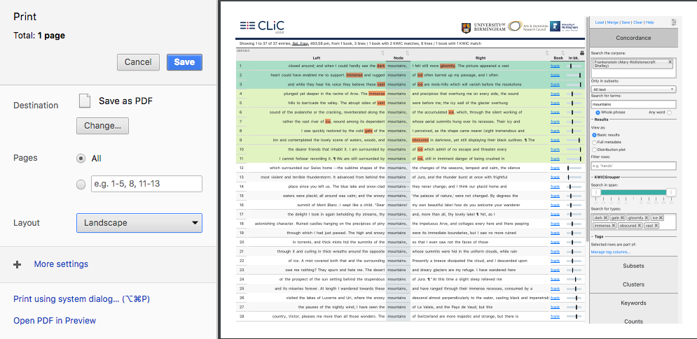

Introduction¶
Welcome to CLiC. CLiC is a web app to support the computer-assisted study of narrative fiction. It started off with the CLiC Dickens project and now contains a range of fictional texts from children’s literature to German novels (all out of copyright).
This guide covers information on how to use CLiC, developer features, information on the corpora and legal & technical details. For inspiration on what to do with CLiC, the CLiC blog provides plenty of examples. If you are a creative writer, you might want to try out the CLiC Creative resources.
Citing CLiC¶
When you use CLiC in your work, please cite CLiC like this:
Mahlberg, M., Stockwell, P., Wiegand, V. and Lentin, J. (2020) CLiC 2.3. Corpus Linguistics in Context, available at: clic-fiction.com [Accessed: DATE]
Navigating the interface¶
The CLiC landing page shows a rotating summary of the CLiC corpora. The sidebar menu on the right provides access to all analysis functions. You can open and close it by clicking the menu icon in the top right corner.

Fig. 1 Open and close the sidebar menu by clicking the menu icon in the top right corner¶
The sidebar contains the following analysis tabs:
Concordance – search for words and phrases
FlexiConc – flexible reproducible concordance algorithms
Subsets – explore text categories
Clusters – find repeated sequences
Keywords – compare corpora
Counts – get word and chapter counts
Texts – read full texts
Each tab is documented in its own section of this guide. Clicking the CLiC logo returns you to the landing page.
The top row of the sidebar shows buttons common to all tabs:
Load – upload a previously exported CLiC CSV file to restore your settings and tag annotations. The CSV can only be reimported if it has not been modified; we recommend keeping the original copy for reloading and saving any manual changes in a separate version. Note that Load will replace any existing tags in CLiC with those from the file (unlike Merge).
Merge – add tags from a CSV file to any pre-existing tags. This is useful when combining annotations from multiple researchers to check how far tag sets overlap or differ.
Save – save your results, settings and annotated tags as a CSV file. The file includes a shareable link that replicates your search settings.
Clear – reset the search settings and any tag columns (identical to clicking the CLiC logo).
Help – open this user guide.
For both Load and Merge, the results must be compatible, i.e. based on the same node word.
Printing output¶
To print CLiC output with colours and highlighting preserved, use your browser’s print menu and ensure that background graphics are enabled (in Chrome: More settings > Background graphics). Landscape format tends to work best. You can print to a PDF file or directly to a printer.

Fig. 2 Enable background graphics in your browser’s print settings to preserve colours¶
System requirements¶
CLiC runs in your web browser (you will need an internet connection). We recommend recent versions of Chrome, Firefox or Safari. If the CLiC homepage displays a red error message, please check whether your browser needs updating. CLiC should also work on most Apple and Android mobile devices.
Acknowledgements¶
The first CLiC project between the University of Birmingham and the University of Nottingham was funded by the Arts and Humanities Research Council (grant references AH/P504634/1 & AH/K005146/1).
The ChiLit corpus was compiled as part of the GLARE project. GLARE was funded by the European Commission within Marie Sklodowska-Curie Actions (reference number EU 749521).
The latest FlexiConc functionality in CLiC was funded by an AHRC / DFG project (grant references AH/X002047/1 & AH/X002047/2).
Current CLiC development is supported by the Alexander von Humboldt Foundation.
The user guide is a work in progress. Please get in touch via dhss-kontakt@fau.de if you have further questions or suggestions for improvement.